python 入门
python
主要是应付期末考试写的笔记，里头包含了不少莫名奇妙的细节doge
Part1 IO
1 2 | |
input 内部的字符串作为输入提示词，int将输入的东西转化特定的类型
默认的输出可以有多个，用‘，’隔开，输出的时候用空格隔开
1 2 3 4 | |
输出两个字符串如果是单纯的空格隔开，结果中就不加空格
1 | |
格式化输入输出
输入
一行中输入多个整数 并且用逗号隔开，input的默认结果都是字符串，split内部不加自动是按照空格分割
1 | |
上述输入只针对int数据，如果有一个数据是5.0，就会有问题，如果要cover所有有关数据的表达式，可以用eval
1 | |
输出
1 2 3 4 5 | |
保留小数并且右对齐
1 2 3 | |
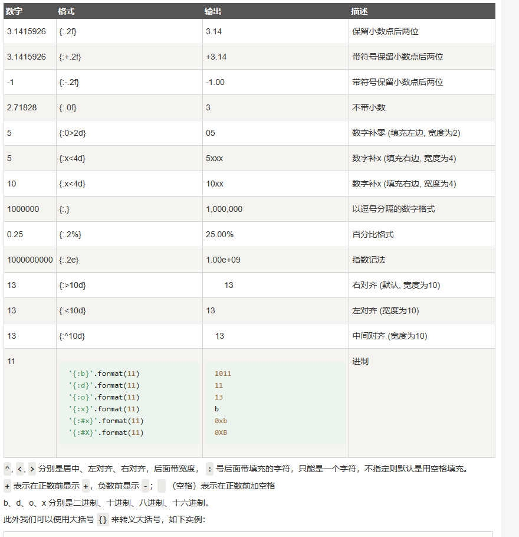
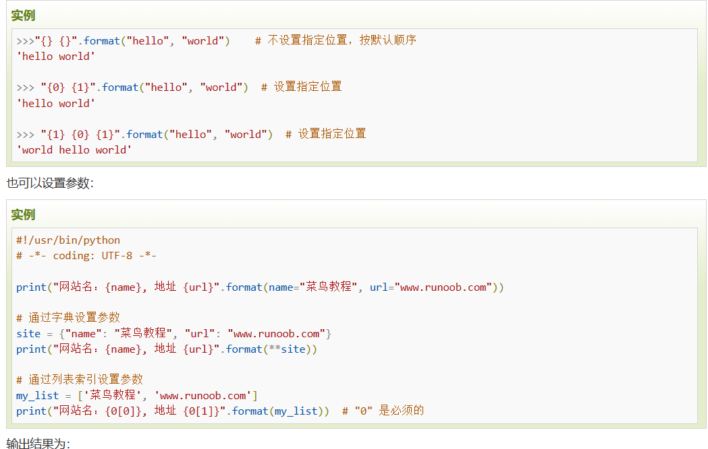
如果不加< > 对于整数默认是>,也就是向前补空格；对于字符串默认是<，也就是向后补空格，“：”前面的数字是用来判定是format里的参数的第几个
1 2 3 4 5 6 7 8 9 | |
结果为
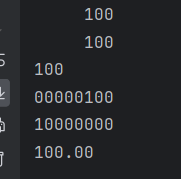
- print("{:0^8}".format(a)) 居中对齐
- print("{:,}".format(a)) 千分位
冒号后面的东西表示格式，冒号前面的东西表示是format中的第几个参数
b d x o 前面加上# 可以显示 0x 0o等
{}内部只能放字面量，无法识别变量
Part2 type
-
int()：将一个数值或字符串转换成整数，可以指定进制(只针对字符串，该指定进制的含义是指把该字符串当xx进制来看)。 -
被转换的字符串左右可以有空格，有效字符内部不能有空格
- 对于bool类型，int(True) 是 1，int(False) 是 0
- int可以转换数字10.0但是无法转换"10.0"，对于数字的转换是向下取整
-
float()：将一个字符串或整数转换成浮点数。 -
str()：将指定的对象转换成字符串形式，可以指定编码。 -
chr()：将整数转换成该编码对应的字符串（一个字符）。 -
chr(97) == 'a' -
ord()：将字符串（一个字符）转换成对应的编码（整数）。 -
如果是单个字符，转换成ASCII；如果是中文，转换成Unicode
-
list(): 将一个字符串转换成单个字符的列表 -
bool(): 只有0，空字符串空列表，None转换过来时False，其他转换过来的都是True -
set(): 将字符串转换成set的时候，每个char -
list() 将字符串转成list的时候，每个char
对于Python中的类型，我们可以使用dir，查询其所有的方法
1 | |
Python中没有单个字符，都是字符串
浮点数在判断大小的时候要注意可能存在一定的差
int
1 2 | |
第二个参数可以制定字符串的进制，如果不加16，前面这个字符串会被默认为十进制，会发生错误
bin(12.5) 是错误的 bin只能针对int
四舍六入五平分
int的进制可以互相转换，如上述代码所示，但是只能从string转为int，如果出现
1 | |
这种情形，会报错，因为92并不是一个合法的8进制数
- 16进制 hex(16) = 0x10
- 2进制 bin(10) = 0b1010
上述这些hex，bin，oct生成的类型都是str，并且0x和0b是字符串的一部分，如果要只截取01的部分的话，需要使用切片[2:]
list
列表并非数组，数组有单独的对象
1 2 3 | |
列表的索引
1 2 3 | |
用sorted去处理列表，原列表不变，返回排序好的；用sort是直接在原列表上进行排序
列表的切片是左闭右开的
列表构造器
1 | |
其基本形式为
1 | |
切片的形式，begin和end都可以超过，会自动补到起始和最后
1 | |
常用的方法
- append 把元素加到列表末尾
- remove 删除第一个和这个元素相同的元素 返回值为None
- max(list) min(list) 找到最大最小 但是内部元素都可比
- len(list)
-
a in lista not in list 返回bool - index(element) 找到该element的下标，如果未找到直接报错
- clear() 清空
- count
- copy
- extend 同+=
- insert(index, x) 在指定下标中插入单个元素，插入列表会变成二级的
- pop(index) 返回并删除指定元素，默认为-1
- reverse() 翻转自己，无返回值
- sort()
python l = [1] * 3 [1,1,1] 这算是拷贝
复制和拷贝
如果只是单纯的赋值，则两个变量指向同一个list
如果要做拷贝，那么需要使用切片list2 = list1[:]，但是切片的拷贝仅对一层，内部还是引用
list.copy()也是一层拷贝
set
和字典一样都用{}，如果要创建一个空set，set的元素和字典的键一样，必须是不可变对象
1 2 | |
set()可以将列表和元组转换过来，集合最重要的属性是没有重复元素，如果创建的时候写了重复元素，但是创建完成的时候会被消除重复值
1 | |
- add() remove() 增删元素
- min() max() len() sum()
- 内部元素无序，不能下标访问
- 循环遍历的结果是确定的？
- issubset(s2) issuperset(s1) == !=判断集合关系
- 也可以用 < <= > >= 来判断集合关系，真子集，子集，真超集，超集
- 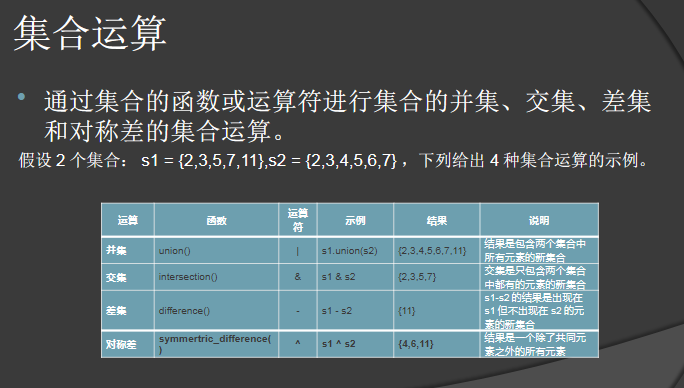
把列表转换成set再转换成列表，确实可以做到去重，但是顺序不能保证，但是可以最后再加一个排序，key = 原列表.index
字典
1 2 3 4 | |
创建字典有很多方法
- d = {1:"hello"}
- d = dict([(1:"hello"),(2:"world")])
- d = dict(1="hello", 2="world")
可变对象不可作为字典的键，比如列表和字典
数字，字符串和元组都可以
- del d['张三'] 删除条目，找不到抛出异常
- d['李四'] = 1 增加条目，不能不加等号，会变成访问，访问失败就变成异常
- 循环循环的是键，in not in 也判断的是键
- 字典合并 d3 = {d1, d2}
- keys() 获取键列表 values() 获取值列表 items 返回元组列表
- clear()
- get(key, value) key能找到返回这个key的value，找不到返回形参的value，默认值为None
str
1 2 3 4 5 6 | |
python中的字符串支持[]访问，同时支持左闭右开的切片，但其本质上属于不可修改的数据类型，不能通过[]和切片去更新其内部的值
但是其允许字符串的拼接，也可以通过replace方法更新其内部的值
字符串类型不能直接与其他类型相加
1 | |
一些关键的方法
- format 见格式化输入输出
- strip() 去除左右空格 还有lstrip()和rstrip()
- split() 按照某个元素分割，默认为空格，如果有连续的两个分割元素，会生成一个空字符串
- find() 按照某个str去找，如果有，返回第一个index，如果没有，返回-1，可以有第二第三个参数，其实就是对字符串做切片
- join()
str1.join(str或者列表) 如果join参数是str，则会把str按字符分割，每个分割里放一个str1；放列表之类的也是一样的，不过是按照列表分割 -
index() 通用的序列子列查找，没找到返回ValueError，需要使用异常捕获
- find() 只对于字符串，没找到返回 -1
- lower() upper() 转换大小写
- replace("old sub str","new sub str") 不是直接在str上修改，是返回修改完的str，如果未找到老的字符串，则不做修改，返回原字符串，也不会报错
- count("sub str") 查找子串出现次数
- title() 返回新的字符串，里面所有单词的开头字母大写
- isdigit() 不支持 + - 只有连续纯数字才行
- isalpha() 只支持连续纯字母
chr
char类型和数字之间的转换
- ord('0') 是 48 是ascii
- chr(48) 是 '0'
转义字符
- 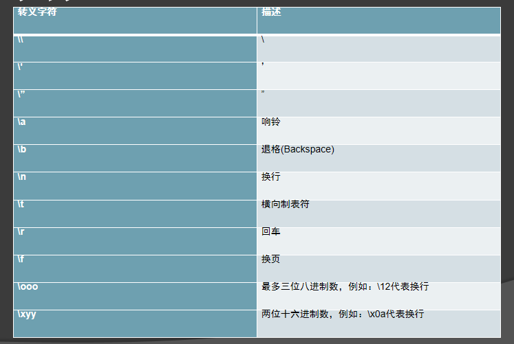
complex
输出的时候加()
1 2 3 4 5 6 7 8 9 10 11 12 | |
bool
Python中的bool类型是True和False
字符串
对于教材中提到的常用函数需要做一个了解
- 使用原始字符串
s = r'hello'也即不使用转义字符，就原样输出，尤其是我们需要输出反斜杠的时候 - 删除前后空格
' hello '.strip() -
查找子串，找到返回第一个子串的位置
-
index() 通用的序列子列查找，没找到返回ValueError，需要使用异常捕获
- find() 只对于字符串，没找到返回 -1
- 是否为英文字母
- 是否为数字字符
字符串内容的修改只能通过形成新的字符串，其内部的title，replace等函数也都是形成新的字符串
- str的格式转换函数 d 0o b x X f e s 格式字符与引用数据类型要一致，整数可以指定不同进制
- format 千分位
列表和元组
列表可变元组不可变
列表
二维列表的每个元素长度没有限制，因为其内部的元素类型是没有限制的
Part3 分支与循环
分支结构
1 2 3 4 5 6 7 | |
python可以直接用 'and' 代替 &&
循环结构
for 循环中常使用到一个叫range的功能
-
range(101)：可以用来产生0到100范围的整数，需要注意的是取不到101。 -
range(1, 101)：可以用来产生1到100范围的整数，相当于前面是闭区间后面是开区间。 -
range(1, 101, 2)：可以用来产生1到100的奇数，其中2是步长，即每次数值递增的值。 -
range(100, 0, -2)：可以用来产生100到1的偶数，其中-2是步长，即每次数字递减的值。
1 2 3 4 | |
while 循环与c类似，同样可以使用break跳出
里面有for和while循环还可以加else语句，只要不break就会执行else
Part4 function
1 2 | |
由于python对于类型检查较为自由，因此python不需要函数重载，但是python支持默认参数
1 2 3 4 5 6 | |
特殊的函数 lambda 表达式
1 2 | |
函数也是对象，有id, type 和 value
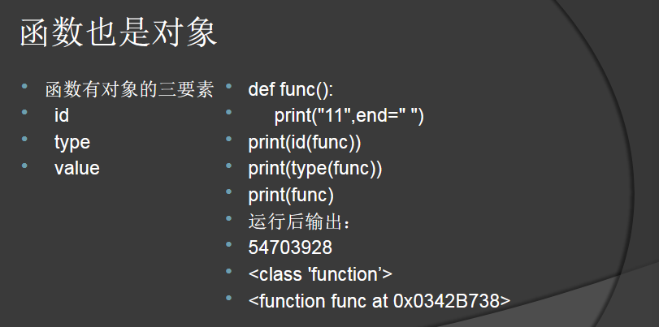
Python处理函数参数有一些更灵活的方法
- 位置参数，按照正常函数的意思，顺序写过去
func(1,2,3) - 关键词参数，对照形参写，
func(x=1,y=2,z=3) -
位置参数+关键词参数混用，必须先写位置参数，再写关键词参数，位置参数先占用
-
func(1,z=2,y=3) - 默认参数，参照cpp，有默认参数后，后面的参数也必须有默认参数
-
不定长参数，会将这些参数化为一元元组
-
python def cun(a, *b): print(b) cun(1,2,3,4) 输出(2,3,4) cun(1) 输出() -
字典参数
python def func(**a): print(a) func(x1 = 1) 输出{"x1": 1}
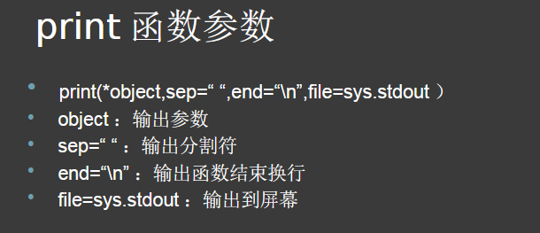
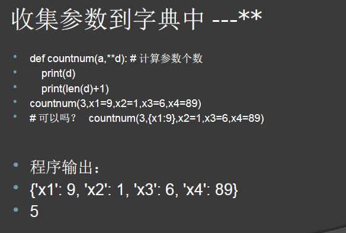
实参可变，形参可以影响实参；反之不能影响
不return，或者return后面不加表达式，都返回None
Part5 module
python的文件支持模块化处理，例如我们在多个文件里都定义了同名函数foo
1 | |
用上述做法来获取特定的foo，或者
1 2 3 4 5 | |
用上述方法来区分
Part6 运算符号
- 算术运算符
- 关系运算符
- 逻辑运算符
python支持很多种不同的运算符号，例如 //= 和 /=
/ 一定会产生浮点数，输出最少保留一位小数
Python的整除是//而不是/
浮点数也可以做整除和取余，整除的结果是整数，但是类型是浮点数，比如5.0
Python
1 2 | |
字符串类型不能和整数做加法
整除是向下取整 -9 // 2 是 -5
3 ** 2 ** 3 是倒着计算的 先计算后面的 2 ** 3
只有幂运算 ** 是右结合的，其余均是左结合的
python的关系运算符会连续书写，中间以and分割
1 2 | |
- round有什么用
- 1J 这类数是什么意思
Python不支持等号的传递，只支持最基础的多变量赋值
1 2 | |
Python之中同样存在，只要or前面是True，就不做后面的任何计算
优先级最低的是或 or，然后是与 and, 优先级最高的是非 not
and ：a and b，如果 a 为 False，a and b 返回 a 的值，否则返回 b 的计算值。
or：a or b，如果 a 是 True，a or b 返回 a 的值，否则它返回 b 的计算值。
0在判断的时候视作False，但是还是输出0
同时切记得短路逻辑
Python中没有 "--x" 这种自减含义，在Python中这视为两个被抵消的减号
x=y=0 -> x=0; y=0
x * *=y+12 -> x=x ** (y+12)
round
是Python中的四舍五入运算符
1 2 | |
后面还可以跟上一个值，来确定最后要保留的到哪一位
1 2 3 4 5 | |
但是如果被保留的几位有连续的是0的话，只要保留一位，最多保留一位0存在于小数点后
python支持链式复制，但是不能加括号
1 2 | |
逻辑运算符
布尔表达式中优先级 not>and>or，其中，
and表达式如果所有值为真，则返回最后一个为真的表达式，如果为假，则返回第一个为假的表达式
or表达式如果所有值为假，则返回最后一个为假的表达式，如果为真，则返回第一个为真的表达式
- 0 == False 是 True
- 10 > 0 == (0 > 1) 就是 10 >0 and 0 == False 是 True
-
print(3 and 5 or 0) 会返回5首先3 and 5 都为真，返回最后一个，5 or 0 返回第一个为真的 返回5
位运算
转换成8位数据，进行位运算
使用补码
正数三码一致，负数 反码除了符号位都要变，再加一
Python位运算符 ^ & | ~ 等，需要转换成二进制后进行相应计算，注意负数的计算要用补码（符号位不变，其余位挨个取反后加1）
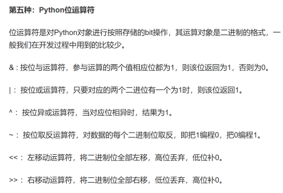
运算优先顺序
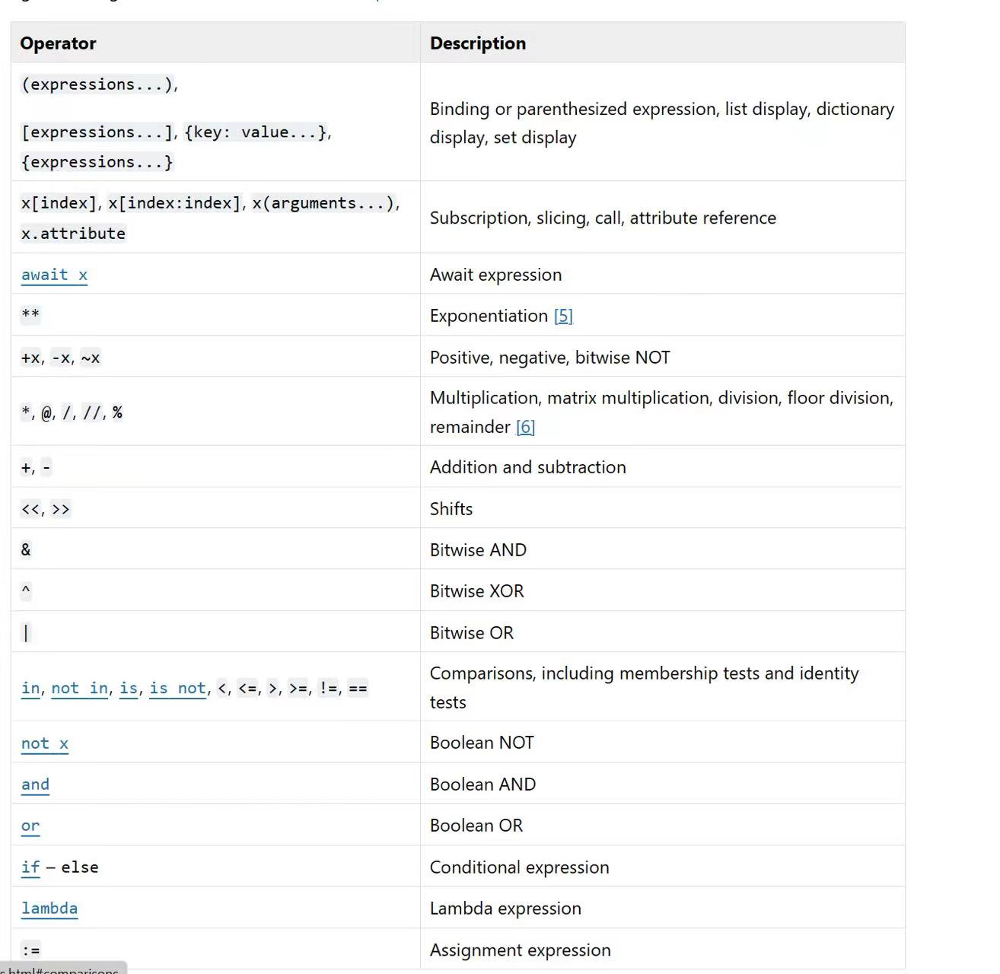
Part7 面向对象
一个简单的例子
1 2 3 4 5 6 7 | |
在python中要限制函数和变量的访问（只区分公有和私有），就限制变量函数名称，在前面加上下划线例如（ '_name' ), 则为私有成员，其余均为公有成员
1 2 | |
@property 装饰器，来定义访问器和修改器
1 2 3 4 5 6 7 8 9 10 11 12 13 | |
@staticmethod 定义静态方法，可以通过objectName.methodName 直接调用
命名空间和作用域
Python对于一个代码块有三个命名空间
- 局部+全局+内置
定义在函数外的都是全局变量
1 2 3 4 | |
如果需要在函数内显示地使用全局变量，需要用global关键词，不然系统会认为我们创建了一个局部变量，global就是做一个声明，global b = 2是错的
1 2 3 4 5 6 7 8 9 | |
拷贝 or 引用
python对整数变量修改会改变内存地址，所以id()函数的返回值会改变
拷贝和移动是每一个编程语言都要处理的问题，尤其是存在复杂内存模型的语言
- 赋值
- 浅拷贝 单纯拷贝一层
- 深拷贝
1 2 3 4 5 | |
在python中，对于列表的简单乘法，导致的结果是创建几个看似独立，但是共用相同内存的列表
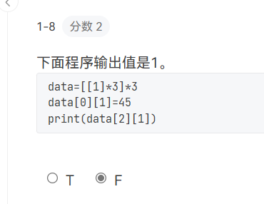
语句
‘\’是续行符
异常处理
1 2 3 4 5 6 7 | |
常用的库
常见的方法
-
sum()sum用来做list的相加 -
id() 查看地址，对于可变变量，变了id也不变；对于不可变变了，变量id也变 -
abs() 求绝对值，如果对于复数，就是求长度abs(3+4j)==5.0 -
map(lamdba,) -
eval -
exec("print(1)") - 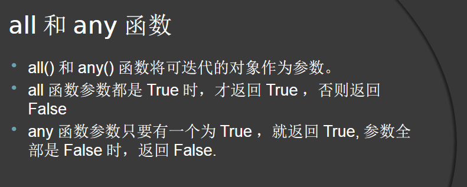
- 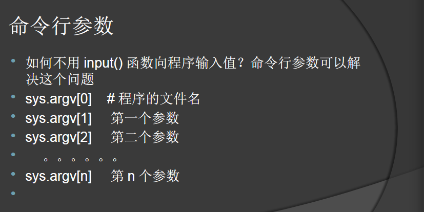
math
sqrt函数输出是浮点数，输出的时候要带一位小数
1 2 3 4 | |
dis
dis反汇编查询
random
- shuffle() 打乱列表的顺序，是直接在原列表上打乱，返回值是None
- random 生成0.0到1.0 左闭右开
- uniform 闭合
- randint 闭合
- randrange
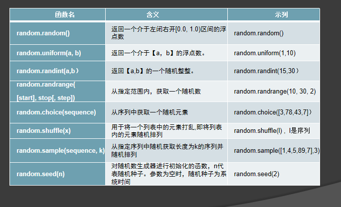
sort 和 sorted
sort是list的方法
1 | |
sorted也只能对list，因此对于字典对象，需要先调用.items()，当然返回的结果也是列表，然后内部元素是元组
1 | |
ast
通过字符串转换列表和字典的方法
1 | |
文件读写和异常处理
计算机文件可分为二种： 二进制文件和文本文件
图形文件及文字处理程序等计算机程序都属于二进制文件。这些文件含有特殊的格式及计算机代码。
文本文件则是可以用文字处理程序阅读的简单文本文件。
1 | |
文件打开模式有
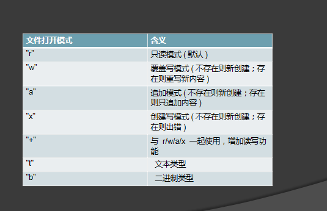
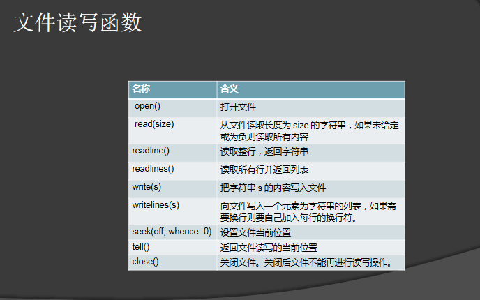
异常处理
1 2 3 4 5 6 | |
一般有多个except，并且except后面加上异常类型
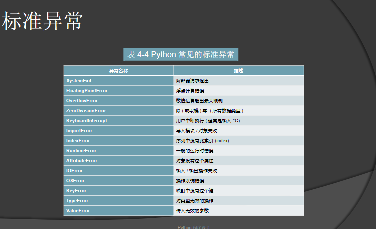
raise语句，也就是类似throw语句，让我们主动抛出异常
assert语句 断言，并且给异常捕获语句传信息
错题
- 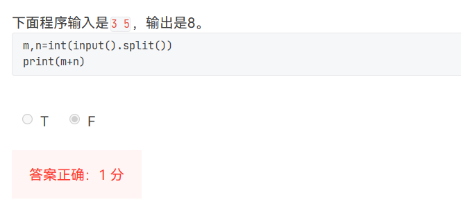
- 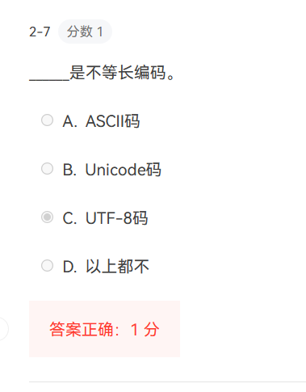
- 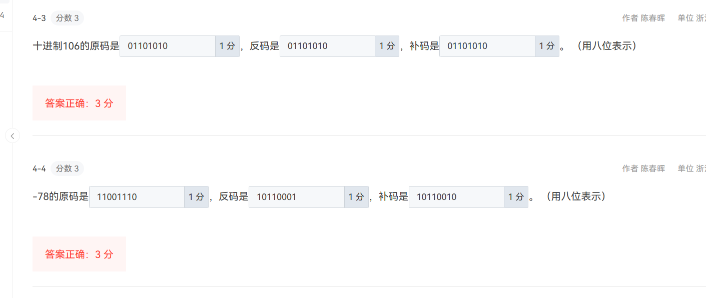
- round(-100, 00023456, 3)的结果是-100.0，小数点位数n代表是根据小数点后第几位来四舍五入，如果是0就保留一个，并不是保留几位小数的意思
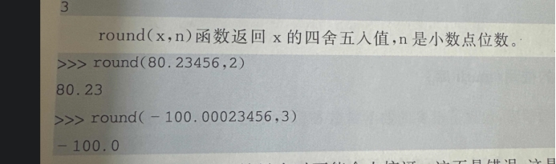 - 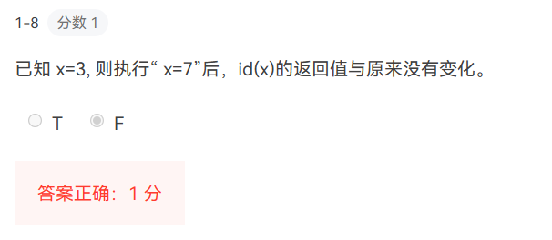
- 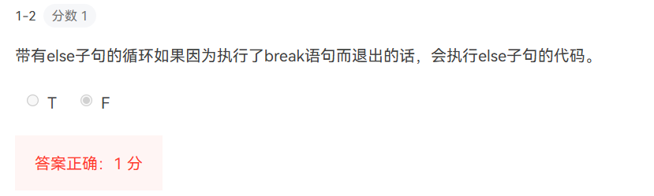
- 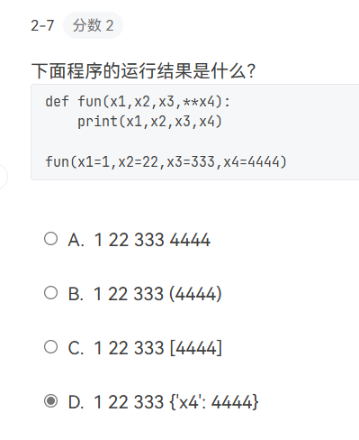
- 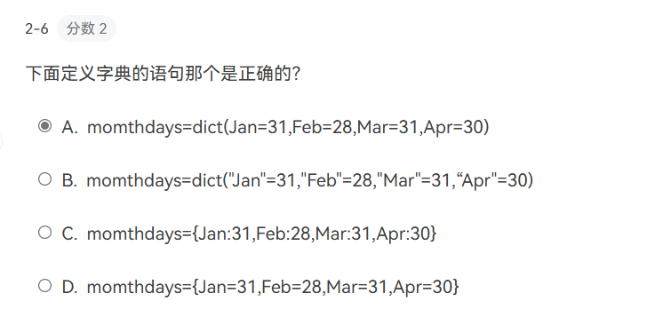
- 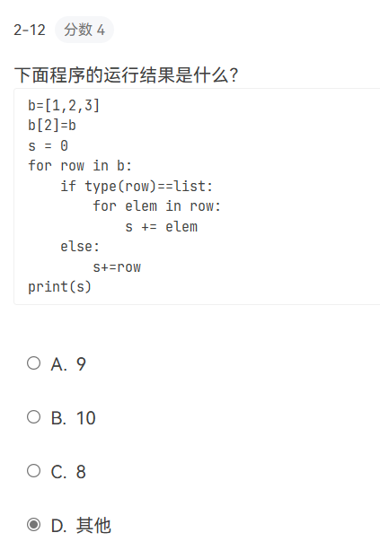
- 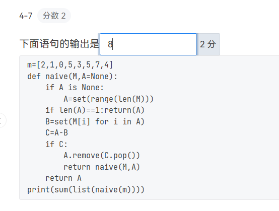
- 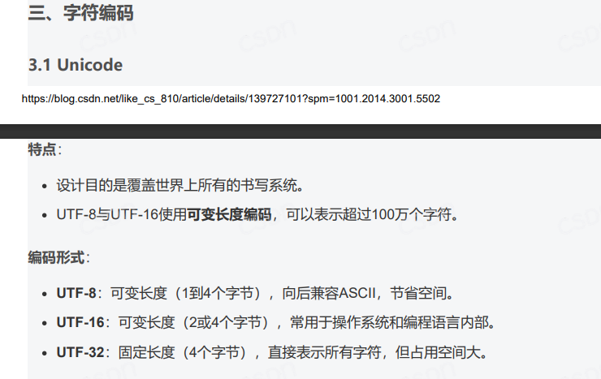
- 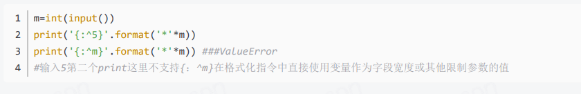
- 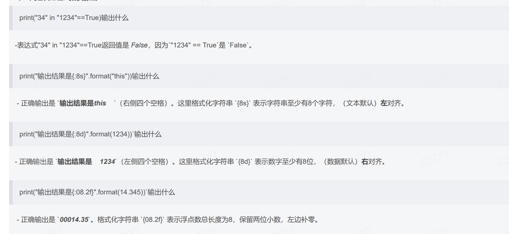
- 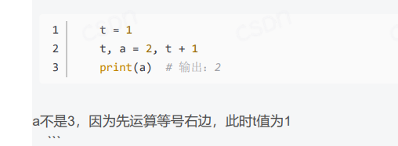
-

- 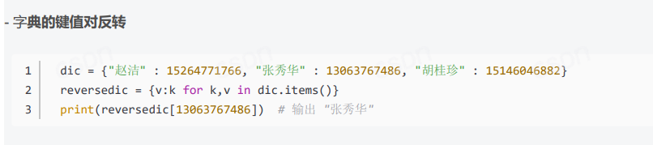
-